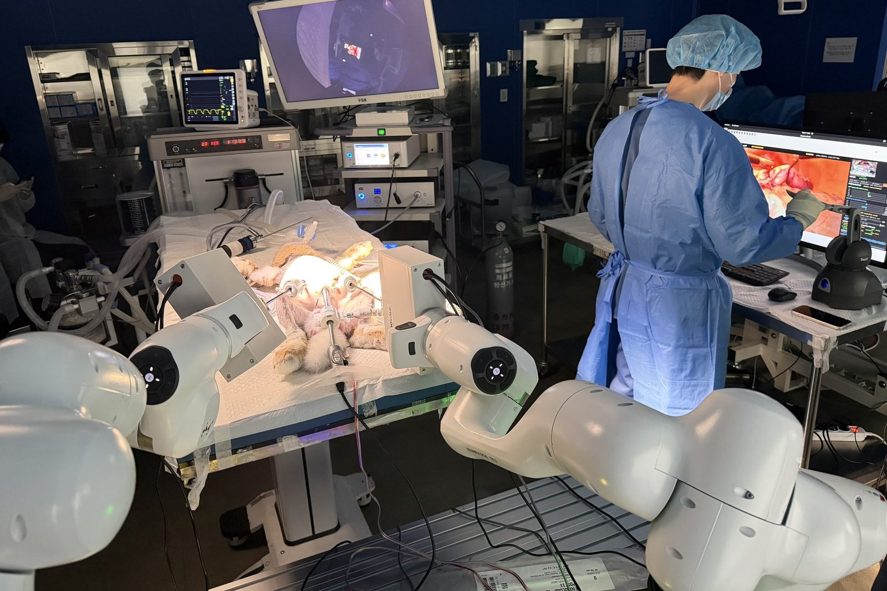

Rosota · first author · ICRA 2027 submission
Learning laparoscopic appendectomy from surgeons' own instruments
Most minimally invasive surgery is still done by hand, and the surgeon's instrument motion is lost when the operation ends. We record it instead, with a small logger clipped to the surgeon's ordinary instrument, and train a surgical robot policy on nothing else.
- SurgiLogger recovers roll, depression, insertion depth and jaw opening from an IMU, a time-of-flight sensor and a Hall sensor; 0.17–0.42° attitude and 1.36 mm depth RMS against a Franka FR3 ground truth.
- Latency matching. Each sensor channel reaches the log with its own delay; rewinding each by its measured latency raised closed-loop lift success from 19% to 81%.
- Closed-loop policy selection. 31 candidate configurations were run in an Isaac Sim scene reconstructed from depth maps of real organs; a frozen DINOv3 backbone cut trocar violations from 88% to 6% relative to ResNet-18.
- In vivo. Retrained on 849 demonstrations from four live rabbits, the diffusion policy completed the appendectomy with electrosurgery in three of four further animals under the surgeon's supervision (peak RCM error 0.84 mm; all animals healthy at seven days). To our knowledge the first learned policy to fire electrosurgery in a live animal.